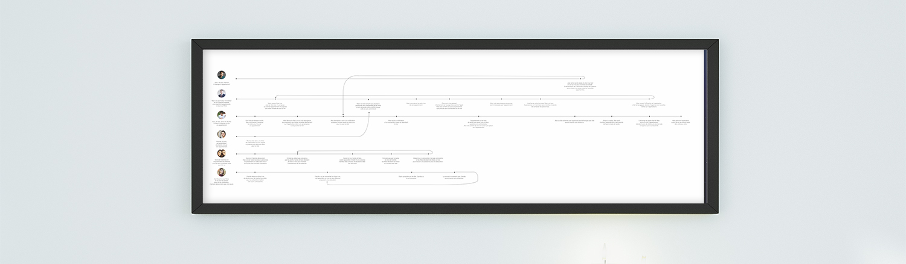
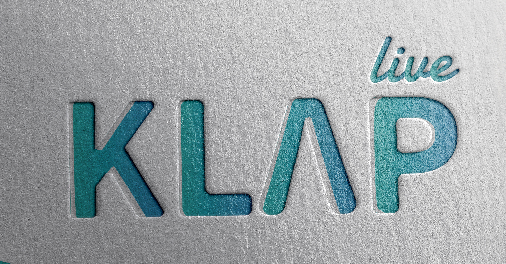
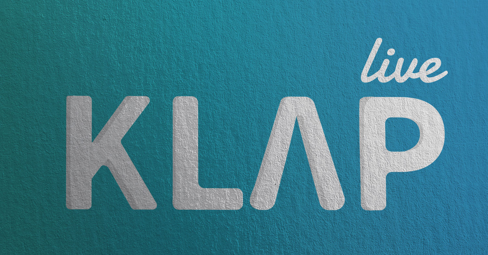
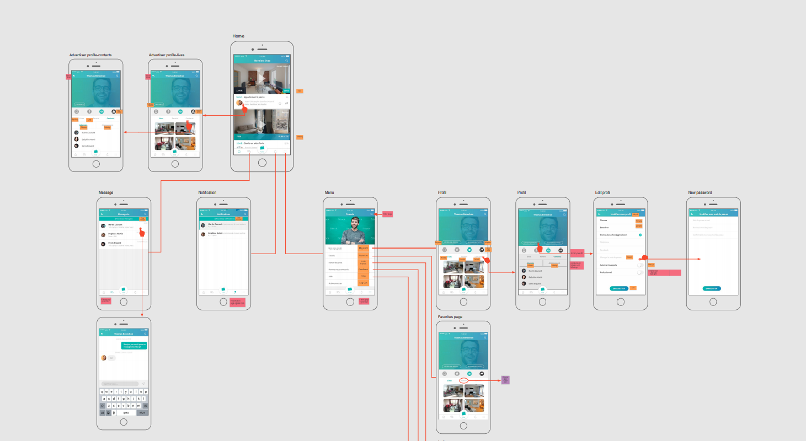
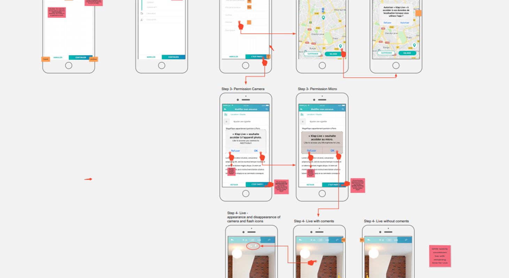

UX / UI / Direction Artistique
Projet freelance.
À partir de janvier 2018. Projet toujours en cours.


Quand on a commencé à remettre à plat toute l’expérience, il paraissait clair qu’elle était trop complexe. L’UI n’étant d’origine n’étant pas très friendly, il fallut revoir le projet dans son ensemble.
Pour commencer, l’idée fut de concevoir un logo, en faisant quelque chose de reconnaissable, dans les couleurs de la confiance et de la simplicité. Ce logo permettrait ensuite de communiquer sur le projet pendant qu’on le retravaillait de fond en comble.
Ensuite, la mission fut de revoir toutes les users journeys. L’objectif aidant à la fois d’attirer les gens qui cherchent à louer, les propriétaires mais aussi les agences immobilières. Il fallait donc penser multi-usages, et bien entendu imaginer dès le départ le lien que cette application aura avec la version desktop qui sera développée en parallèle.
Une fois que l’expérience utilisateur fut établie, je mis en place toute une charte graphique et commença a établir les interfaces principales pour définir un modèle graphique et faire, par la suite, toutes les déclinaisons de pages.
Une fois ce travail terminé, tout fut envoyé aux développeurs (en Inde). Il fut ensuite faire toute la Quality Assurance une fois les versions bêta sorties, afin que le projet arrive sur l’app store le plus clean possible.

